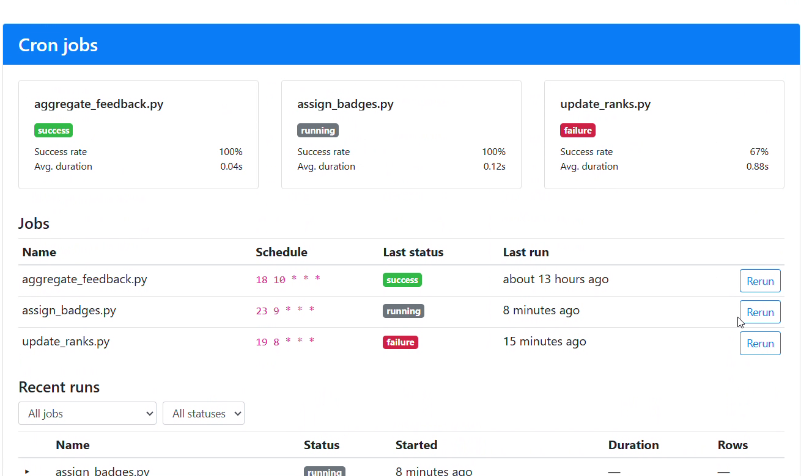
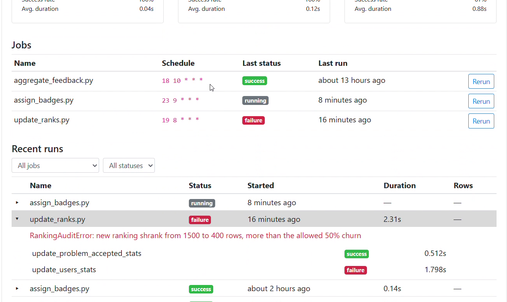
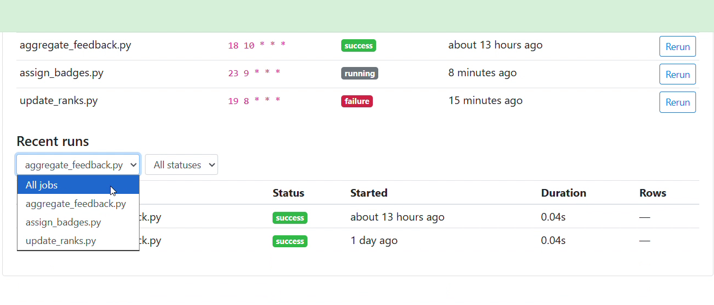

omegaUp's background jobs ran every night and left nothing behind. This is the project that gave them a history, stopped them overlapping, and put them on a page an admin can read. It was the first of the three projects Juan Pablo asked for, and the other two are built on it.
What was wrong
There were five things, and I wrote them into the parent issue before writing any code.
There was no record that a job had run. No row saying it started, finished, took a while or fell over. When a job died halfway through, the evidence was a missing badge or a stale leaderboard, noticed days later.
Nothing stopped two copies overlapping. That matters most for the ranking job, which at the time deleted every row of the rankings table before writing fresh ones. Two copies overlapping does not raise an error. It leaves half a leaderboard and carries on.
Nobody could see how long a job took, or which step inside it was slow.
Rerunning a job needed a shell on a production pod.
And when I read the production schedule I found only three jobs on it. The model trainer and the plagiarism detector were scripts somebody had to remember to run.
The design
Two tables
Cron_Jobs is the registry: one row per job, with its schedule and a switch.
Cron_Runs is the history: one row per execution, with a status, when it started and finished, how long it
took, how many rows it touched, a JSON list of its phases, and the error text if it failed.
The registry, as it merged:
CREATE TABLE `Cron_Jobs` (
`job_id` int NOT NULL AUTO_INCREMENT,
`name` varchar(64) NOT NULL,
`description` text,
`schedule` varchar(64) DEFAULT NULL,
`enabled` tinyint(1) NOT NULL DEFAULT '1',
`created_at` timestamp NOT NULL DEFAULT CURRENT_TIMESTAMP,
`updated_at` timestamp NOT NULL DEFAULT CURRENT_TIMESTAMP ON UPDATE CURRENT_TIMESTAMP,
PRIMARY KEY (`job_id`),
UNIQUE KEY `unique_cron_job_name` (`name`)
)A run stores the job's name, not an id pointing at the registry. Juan Pablo asked about that in review, and it is a fair question, because an id would avoid repeating the name and the database would enforce the link. I kept the name for two reasons. A script that is not in the registry should still be able to record that it ran. And if a job is renamed or removed, its history should stay readable. He asked me to write that reasoning into the schema itself, so it is in the column comment.
One runner
Each job wraps its work in a context manager from stuff/lib/runner.py.
The lock is MySQL's GET_LOCK, a named lock held by a connection.
def _acquire_lock(self) -> bool:
assert self._connection is not None
timeout = getattr(self._args, 'lock_timeout', 0)
with self._connection.cursor() as cur:
cur.execute(
'SELECT GET_LOCK(%s, %s)', (self._lock_name, timeout))
row = cur.fetchone()
return bool(row is not None and row[0] == 1)I chose it over a lock file because these jobs can run on different machines. And because the database ties the lock to the connection, a job that crashes while holding it releases it by dying. The default timeout is zero: a second copy does not queue up behind the first, it logs "already running" and leaves.
The review of the runner found two ways I could still have left the lock held. If writing the "running" row
failed after the lock was taken, the cleanup never ran, because Python does not call __exit__ when
__enter__ raises. And if writing the final status failed, the release after it was skipped. Both paths now
release the lock in a finally. Neither would have shown up in normal use, which is the kind of bug a
reviewer is for.
Adopting it in a job is a small change. The ranking job's pull request deletes more lines than it adds, because its hand written timing code comes out.
with cron_run.phase('update_problem_accepted_stats'):
update_problem_accepted_stats(cur, dbconn.conn)
with cron_run.phase('update_users_stats'):
update_users_stats(cur, cur_readonly, dbconn.conn, args)
with cron_run.phase('update_schools_stats'):
update_schools_stats(cur, cur_readonly, dbconn.conn,
args.date,
args.update_school_of_the_month)The page
/admin/crons is for system admins only. It lists each job with its schedule and how its last run went, and
below that the fifty most recent runs across all jobs. A run opens to show each phase with its own timing,
and the error text if it failed.


Juan Pablo asked for the schedule to be shown in words next to the raw cron expression. That sounded small and was not, because cron expressions are a small language. I describe the shapes the registry uses, such as daily, weekly, monthly, hourly and every few minutes, and for anything else the page shows only the expression. I would rather show nothing than a confident wrong sentence.
A guardrail on the ranking job
Before the new ranking is committed, the job checks it. If it is empty, has negative scores, or has lost more than half of yesterday's ranked users, it raises and the transaction rolls back. I would rather have yesterday's rankings than today's broken ones.
I tested that the rollback does what I claim. On a forced failure the job exits non zero and the checksum of the rankings table is identical before and after.
Rerunning a job safely
The obvious design is that the button sends a request and the server runs the job. I did not build that, because a web request that can start a program on your servers is a door, and I did not want to be the person who built it.
The endpoint checks four things and then writes one row with the status pending. It never starts anything.
A separate worker, the dispatcher, is the only thing that launches a job. A name is launchable only if it is on a list compiled into the dispatcher, is present in the registry, is a bare filename and exists in the cron directory. There is a test that fails if the list in Python and the list in PHP ever drift apart.
cur.execute(
'''
UPDATE Cron_Run_Requests
SET status = %s, picked_at = NOW()
WHERE request_id = %s AND status = %s;''',
(RequestStatus.PICKED.value, request_id, RequestStatus.PENDING.value))
claimed = cur.rowcount == 1
dbconn.conn.commit()
return claimedThat one statement is the whole concurrency story. Two dispatchers can read the same pending row, but only one of them can change it, and the other sees that it changed nothing and moves on.
Two things fall out of this design without extra work. Every rerun is recorded, including who asked. And the person pressing the button needs no server access, which was the point.

How it got split, twice
I opened the rerun feature in July as one pull request. In August I split it into five, and the same day folded three of them back, because a chain of drafts that could not be reviewed until their parents merged felt like noise. That was the wrong call. In October Juan Pablo reviewed it and asked for it in pieces, with a reason I could not argue with:
The dispatcher in particular contains concurrency, timeout, transaction, and failure-handling behavior that deserves to be reviewed independently from the UI and API changes.
So it is now a stack, and each pull request says at the top which number it is and what has to merge first.
The order it merged in
The repository's schema check does not allow a table definition and its generated data access classes in the same pull request. So every table has to merge before the code that reads it can even pass CI, and every stacked pull request stays red on one check until its parent lands. I spent a lot of the summer explaining a red check that was correct.
The tables waited fifteen days, the page forty six. Then the runner merged on 19 August and the three pull requests behind it landed in the next three days.
What this does not do
Three things I could phrase so they sound better than they are.
The system can tell you a job ran and failed. It cannot tell you a job never started, which is the one failure that a run history cannot catch by itself. The schedule is stored, so this can be built, and it is next.
The lock lives in the database, so it is only as available as the database. It is also there to stop wasted work, not to guarantee correctness. Correctness comes from the transaction underneath.
And the lock is held on a connection that sits idle for the whole job. A server side timeout could drop that connection on a long run. I have not seen it happen, and I have not ruled it out.
The pull requests
The foundation
Two tables. Cron_Jobs lists the jobs that exist, with a schedule and a switch.
Cron_Runs holds one row for every execution.
Juan Pablo asked whether a run should point at its job by id. I kept the name, because a run has to be recordable for a script that is not in the registry, and history should outlive a job being renamed. He asked me to write that reasoning into the schema, which I did.
The data access layer for both tables, including "the last successful run of this job", which is what lets the page say how fresh a job's data is. Most of its 1,345 lines are generated.
The piece everything else stands on. One context manager that a job wraps around itself. It checks the job is switched on, takes a database lock so two copies cannot overlap, writes a "running" row, times each phase, and on the way out records what happened and lets go of the lock.
Juan Pablo found two ways the lock could be left held: if writing the first row failed after the lock was taken, and if writing the final status failed. Both are now covered by finally blocks. He also noticed my description mentioned a method that was not in the diff.
Two endpoints for system admins: the registry with the fifty most recent runs, and one run with its phases.
Juan Pablo asked for a test that a non admin is refused on the second endpoint too, since it has its own check, and one with phases present, since the endpoint decodes them.
The ranking job, wrapped in the runner. It deletes more lines than it adds, because the hand written timing code comes out. Merged twenty minutes after the runner.
The badge and feedback jobs through the runner. The badge job reports a failed badge through its return value and carries on, so the runner gained a way to mark a run as failed without an exception.
The two remaining scripts, model training and plagiarism detection, through the runner. With this every cron job on omegaUp records its runs.
Before the new ranking is committed, the job checks it. If it is empty, has a negative score, or has lost more than half of the users who were ranked yesterday, the job raises and the transaction rolls back.
Juan Pablo noticed the table also holds rows for people ranked only as problem authors, which would have inflated yesterday's count and caused false alarms. Both sides now count the same people.
The page at /admin/crons: one row per job with its schedule and latest result, and one row per
recent run that opens to show the timing of each phase and the error if there was one.
Juan Pablo asked for the schedule to be shown in words next to the raw expression, for the page and the API to share one helper, and for job names and statuses to be enums. On approving: I'm sorry the human-readable date suggestion ended up requiring more work and complexity than I initially expected.
Rerun, and the second pass on the page
The queue a rerun request goes into.
Juan Pablo asked for a foreign key from a request to the run it produced.
Data access for the request queue. Main had gained a table without generated classes in the meantime, so regenerating brought those in too.
Juan Pablo asked why "the active request for a job" needed an ORDER BY when there should only ever be one. It did not, so it went.
The endpoint an admin's click reaches. It checks the caller, the job name, that the job is switched on and that nothing is already queued for it, and then writes one row. It does not start anything.
The worker that runs rerun requests. It claims one request at a time, starts the job as a child process with a time limit, links the run that produced, and notifies whoever asked.
This pull request has had three shapes. It began as the whole rerun feature. Juan Pablo asked for it in six pieces, and it is now the dispatcher alone.
Juan Pablo The dispatcher in particular contains concurrency, timeout, transaction, and failure-handling behavior that deserves to be reviewed independently from the UI and API changes.
A button on each job row. About forty lines of its own.
One file: sign in as an admin, open the page, check the jobs are listed, press rerun, check it was queued.
A second pass on the page: a health card per job with its success rate and average duration, filters, relative times, refresh every fifteen seconds, and a switch to turn a job off. It is last in the queue behind the rerun pieces.
Closed without merging
These four are the pieces I split out and folded back on 29 August. I am listing them because the list is meant to be complete.
An end to end test for the page. It stayed a draft behind the rerun work, I folded it into #10021, and after the split it came back as #10277.
The rerun endpoint as its own pull request. I folded it back into #10021 the same day, and it returned in October as #10275.
The dispatcher as its own pull request, folded back into #10021 the same day.
The endpoint behind the on and off switch, split out of #10048 and folded back the same day.
The issues
| Issue | What it asks for | Status |
|---|---|---|
| #9992 | Cron Control Plane : an observability and operational tooling for background jobs | open |
| #9993 | persistant cron execution history by registry and run tables | completed |
| #9994 | DAOs for the cron tables | completed |
| #9997 | Reusable cron runner that records runs and prevents overlap | completed |
| #9999 | Admin API for cron run history and health | completed |
| #10002 | Record update_ranks executions through the runner | completed |
| #10004 | Admin dashboard page for cron jobs | completed |
| #10007 | Record assign_badges and aggregate_feedback through the runner | completed |
| #10010 | Pre-publish guardrail for the ranking job | completed |
| #10018 | Let admins safely rerun a cron job | open |
| #10019 | Record the remaining crons through the runner | completed |
| #10020 | End to end test for the cron dashboard | open |
| #10047 | Improve the cron dashboard with health cards, filters, relative times and auto refresh | open |